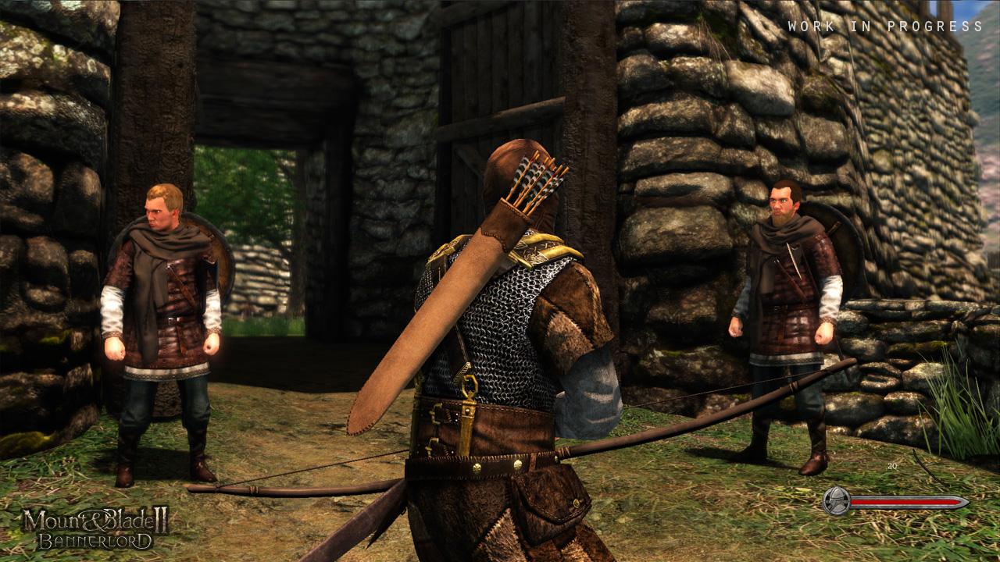

Mount & Blade 2: Bannerlord
Release date: To Be Announced
Developer: TaleWorlds Entertainment
Link: Official site
Part spectacle, part sim, part sandbox RPG, Mount & Blade remains a one-of-a-kind blend of systems and ideas. It's the thrill of being in a battle that's way bigger than you, of launching a single arrow into a horde of 50 dudes storming your castle. And it's the fun of being an average lord in a churning political and military sea of medieval NPCs.
The original (excluding Warband) is almost 10 years old, so as much as anything we're glad to see Bannerlord bringing a visual and technical overhaul to the series. Character customization, as we saw at the PC Gamer Weekender, offers enough flexibility to sculpt convincing dark ages replicas of Adam Driver, Vladimir Putin, Arnold, and others, but we're equally interested in the new item crafting system, which seems like it'll let you build weapons with personality and history. And lord, those sieges look nuts.